A cross between two pure lines and its descendants—the F1, the F2 and the backcrosses—are enough to find out how a trait is inherited. Their means tell whether the genes act additively, with dominance or with epistasis; their variances separate the additive part from the dominance part and from the environment. Block 7 runs Mather’s scaling tests, Cavalli’s joint scaling test with the sequence of models, the components D, H, F and E with their heritabilities, the minimum number of effective factors, heterosis and inbreeding depression.
Every generation mixes the three genotypes of each locus—AA, Aa and aa—in known proportions. That is why its mean is a fixed combination of a few parameters—the mean m, the additive effects [d], the dominance effects [h] and the three two-locus epistases [i], [j] and [l]—and its variance, another combination of D, H, F and E. With six generations or more, those combinations can be solved.
| Generation | Names accepted | Expected mean | Expected variance |
|---|---|---|---|
| P1, P2 | P1, P2 | m ± [d] + [i] | E |
| F1 and its reciprocal | F1; F1R, RF1, F1rec | m + [h] + [l] | E |
| F2 | F2 | m + ½[h] + ¼[l] | ½D + ¼H + E |
| F3 | F3 | m + ¼[h] + 1⁄16[l] | ¾D + 3⁄16H + E |
| BC1 (F1 × P1) | RC1, BC1, B1, retrocruza1 | m + ½[d] + ½[h] + ¼[i] + ¼[j] + ¼[l] | ¼D + ¼H − ½F + E |
| BC2 (F1 × P2) | RC2, BC2, B2, retrocruza2 | m − ½[d] + ½[h] + ¼[i] − ¼[j] + ¼[l] | ¼D + ¼H + ½F + E |
| Selfed BCs | BC1S, B11, BS1 (and those of P2) | m ± ½[d] + ¼[h] + ¼[i] ± ⅛[j] + 1⁄16[l] | ½D + 3⁄16H ∓ ¼F + E |
Block 3 recognizes the generations design when the generation column (or the name of the entries) has at least three of these codes and they are the majority of the entries. The data can be plants measured one by one, with or without plots and blocks, or one value per plot. The scaling tests use P1, P2, F1, F2 and the backcrosses; the models, all the generations present. The coefficients of the F3 and of the selfed backcrosses were derived from the genotypic frequencies and checked by simulation.
The 1 · Generations and model card takes the data from Block 3 (without the observations you have excluded), summarizes in one line the generations, the number of plants or plots and the metric, and gathers the main results in tiles: the heterosis over the mid-parent, the standard heterosis if there is a check, [d] and [h] of the chosen model, the degree of dominance, the narrow-sense heritability (or D, if it comes out negative) and the minimum number of effective factors. Those that cannot be computed do not appear.
There are six controls:
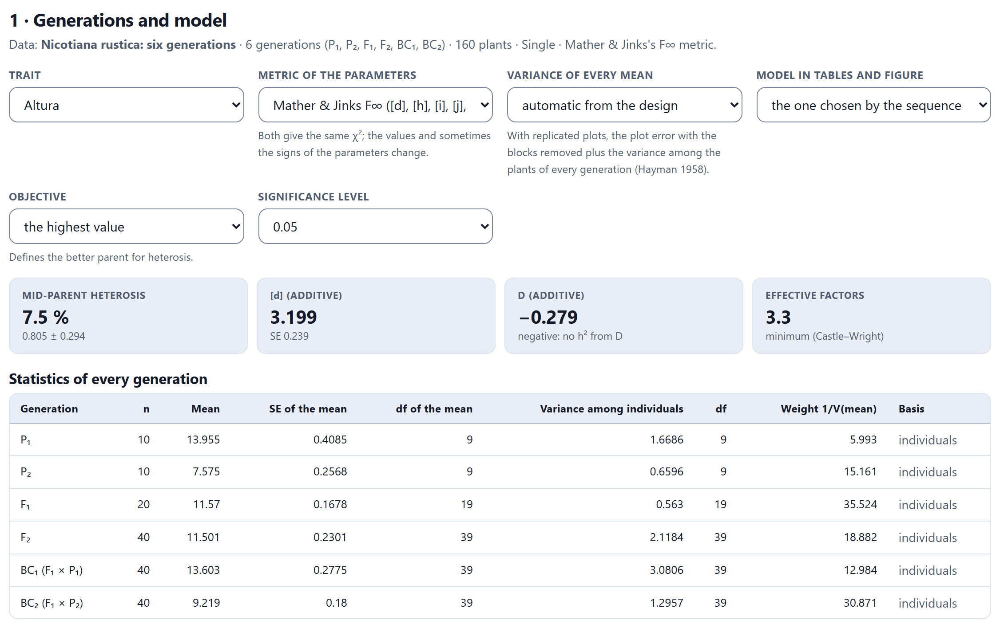
The Statistics of every generation table is the basis of everything else: number of plants, mean, standard error and degrees of freedom of the mean, variance among individuals with its degrees of freedom, the weight 1/V(mean) and the basis of that weight. The N. rustica example comes from Gale, Mather and Jinks (1977), who published the number of plants, the mean and the variance of each generation; the 160 plants were rebuilt with exactly those values, which are all these analyses use.
All the tests of the block compare means, and each mean is weighted by its precision. Where its variance comes from depends on how the experiment was planted, and in automatic mode the Variance of every mean menu distinguishes three cases.
Here s²g is the variance among the plants of the same plot of generation g, k the number of plants per plot and r the number of plots. The plot error σ²p comes from the residual mean square of the plot means once the generation and block effects are removed, minus the part the plants already contribute (Hayman, 1958). Since it is a combination of mean squares, the degrees of freedom of each mean are Satterthwaite’s (1946) and are not integers.
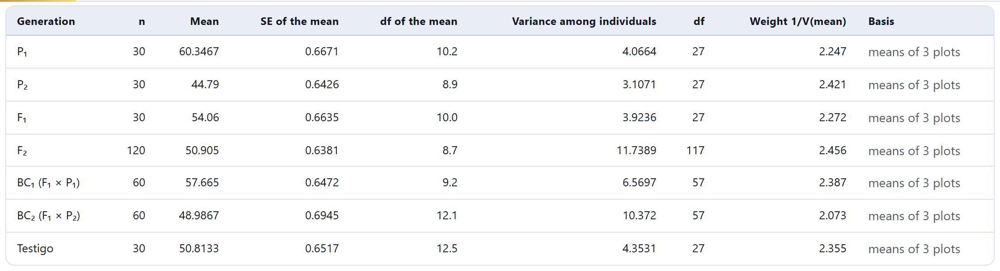
In the simulated example, the residual mean square of the 18 plot means is 1.303 with 10 degrees of freedom; the plants contribute 0.375, so σ²p = 0.928. A mixed model fitted by restricted maximum likelihood, with a plot effect and one residual variance per generation, gives practically the same variances of the means (0.445 against 0.445 in P1, 0.407 against 0.408 in the F2).
Every generation is in all blocks, so a good block raises all the means equally and the effect cancels out in any comparison among them. If the variance of each mean were computed from the plot means as they come, with the blocks inside, the standard errors would grow for no reason and the tests would lose almost all their power. In 1,000 simulations like the example, the true variance of scaling test C was 4.96; the block’s calculation estimated it at 4.96 on average, whereas with the blocks inside it would have been 15.9.
The menu lets you force the basis. plot error (blocks removed) applies the formula above whenever there is more than one plot per generation; among individuals / n uses s²/n, which is correct with plants randomized one by one but ignores the plot error when there are plots: the standard errors come out too small and any difference looks significant. If the generations do not all have the same basis, a warning points it out.
Mather’s (1949) scaling tests are contrasts among means that equal zero when the additive–dominance model is enough. Each one combines different generations and is therefore sensitive to a different kind of epistasis; the last column of the table tells what each test estimates in the F∞ metric.
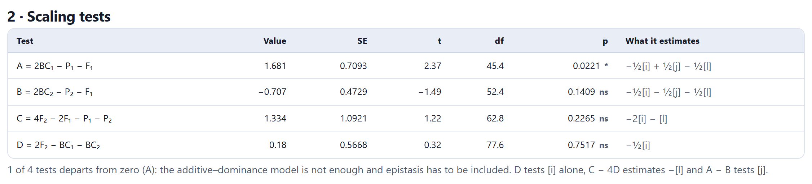
In N. rustica, A = 1.681 ± 0.709 (t = 2.37, p = 0.022) and the other three are not significant. A single significant test is enough to say that the additive–dominance model falls short. Since A − B = [j] equals 2.39 and D = −½[i] is almost zero, suspicion falls on additive × dominance epistasis, which the joint test confirms. D′ appears when there is an F3.
The variance of each test is Σc²V(y), with the squared coefficients. Its degrees of freedom are Satterthwaite’s for that combination: 45.4 for A, fewer than the 67 obtained by adding those of its three generations, because a third of the variance of A comes from P1, which has only 9 degrees of freedom. Below the table, a figure shows each test with its confidence interval; the significant bars are drawn in solid color.
Cavalli’s (1952) joint scaling test fits the means of all generations at once by weighted least squares, with weight 1/V(y). If the model describes the means, the weighted sum of squared deviations follows a χ² with as many degrees of freedom as generations minus parameters.
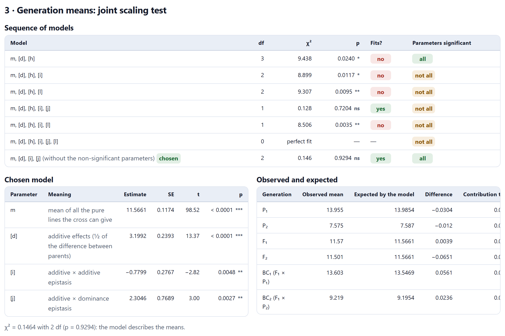
The model m, [d], [h] with the data of Gale, Mather and Jinks (1977) gives χ²3 = 9.438 with P = 2.40% and m = 11.0036 ± 0.1914, [d] = 3.6349 ± 0.1924, [h] = 0.5937 ± 0.2813, the values of the paper; the second data set of the same paper gives χ²3 = 12.5731, also the published one.
The block fits six models of increasing complexity and chooses the simplest one that is not rejected and has all its parameters significant; if none achieves this, it takes the first one that is not rejected and removes the non-significant parameters one at a time, starting with the least significant, as long as the fit holds (Jayasekara and Jinks, 1976).
The chosen model says that the height of N. rustica in this cross depends on additive effects ([d] = 3.20 ± 0.24), additive × additive epistasis ([i] = −0.78 ± 0.28) and, above all, additive × dominance epistasis ([j] = 2.30 ± 0.77); dominance alone is not significant. The figure below places the observed means with their intervals next to the expected ones, with the mid-parent line as a reference.
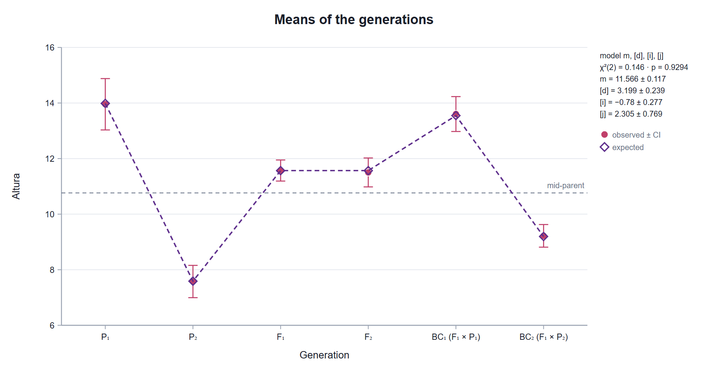
With Model in tables and figure set to perfect fit, the tables and the figure show the six-parameter solution, which with six generations leaves no degrees of freedom for the χ²: only the t tests of each parameter remain. If the model includes [h] and [l], the note classifies the epistasis as complementary (same sign) or duplicate (opposite signs), after Jinks and Jones (1958). The classification only makes sense if both parameters are significant, and it depends on the metric.
| Metric | m | d | h | i | j | l |
|---|---|---|---|---|---|---|
| Mather and Jinks F∞: [d], [h]… | 11.125 | 3.190 | 1.059 | −0.360 | 2.388 | −0.614 |
| Hayman F2: d, h… | 11.501 | 4.384 | 0.445 | −0.360 | 1.194 | −0.614 |
Both metrics describe the same thing from a different origin: the F∞ measures from the mean of the pure lines the cross can produce, and Hayman’s from the F2. You go from one to the other with mF∞ = m − ½h + ¼l, [d] = d − j, [h] = h − l, [i] = i, [j] = 2j and [l] = l. Many papers that cite Hayman (1958) actually use the Jinks and Jones convention, with [j] = 2j; with Hayman’s metric, the note gives that value and the full equivalence. When comparing with a paper, check the metric first.
With plot means. When the variance of each mean is estimated with few degrees of freedom, as in an experiment with three blocks, the χ² rejects too often: in simulations without epistasis, about 9% of the time at 5%. Then the p of each model is that of the Welch–James approximation (Johansen, 1980), which compares χ²/c with an F whose degrees of freedom depend on those of each variance; with it, the rejections drop to about 6%. With individual plants, Cavalli’s χ² is kept, which is the one in the papers.
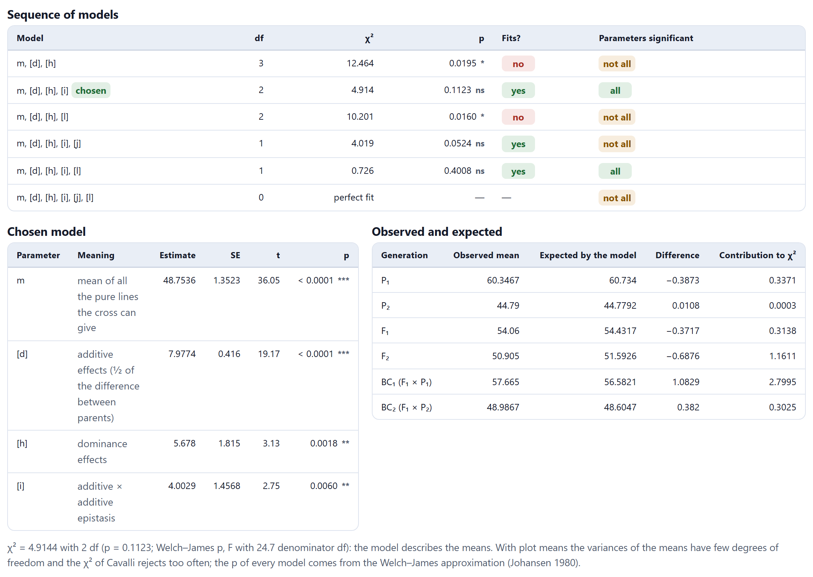
In the simulated example, [d] = 7.98 ± 0.42, [h] = 5.68 ± 1.82 and [i] = 4.00 ± 1.46, against the true 8, 6 and 3. The dominance × dominance epistasis ([l] = −2) is too small to detect with three blocks: the model with [l] also fits, but the sequence keeps the simpler one. The scaling tests already announced it: C = −9.64 ± 3.02 and D = −4.84 ± 1.59 are significant, and both contain [i].
The 4 · Generation variances: D, H, F and E card fits the variances among individuals of each generation to their expected values (Table 7.1) by weighted least squares. D = Σd² is the additive variance, H = Σh² the dominance variance, F = Σdh the association between them (positive when dominance points toward P1; then the backcross to P1 varies less than the other) and E the environmental variance. The parents and the F1, which do not segregate, estimate E; the F2 and the backcrosses, the rest. Each variance is weighted by df/(2V²), with V its fitted value, and the weights are recomputed until they no longer change (Mather and Jinks).
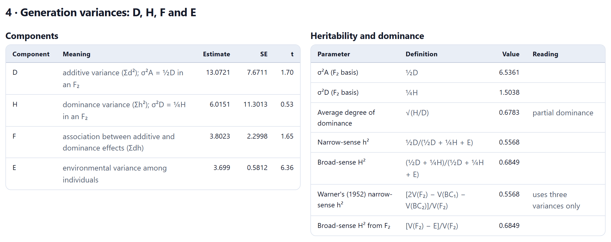
In the simulated example, D = 13.07 ± 7.67, H = 6.02 ± 11.30, F = 3.80 ± 2.30 and E = 3.70 ± 0.58; the fit of the variances is not rejected (χ²2 = 0.53, p = 0.77). The standard errors of D and H are large: separating the additive variance from the dominance variance with six variances requires many segregating plants. From them come an average degree of dominance √(H/D) = 0.68 (partial dominance; the true value is 0.77), a narrow-sense h² of 0.557 and a broad-sense H² of 0.685, both in the F2 and per plant.
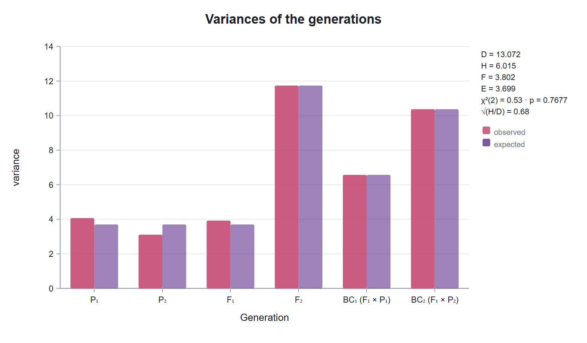
Warner’s (1952) h², [2V(F2) − V(BC1) − V(BC2)]/V(F2), uses only three variances. With the six basic generations it coincides exactly with the narrow-sense h², because D, H and F are fitted with no residual to the F2 and the backcrosses; it differs when there are more generations, such as the F3. The broad-sense H² from the F2, [V(F2) − E]/V(F2), is the other direct reading.
In N. rustica, D = −0.28 ± 2.44 and F = −1.78 ± 0.76, and the fit of the variances is borderline (χ²2 = 5.41, p = 0.067). With a negative D, neither the degree of dominance nor the heritabilities that use D and H are computed; Warner’s h² (−0.066) and the H² from the F2 (0.596) are, because they use the variances directly. A negative D usually indicates few plants, linkage or epistasis.
The 5 · Heterosis, inbreeding depression and effective factors card compares the F1 with the mean of its parents and with the better of them, and the F2 with the F1. The difference is tested, not the percentage, with its standard error and Satterthwaite degrees of freedom; the percentage is given to help read it.
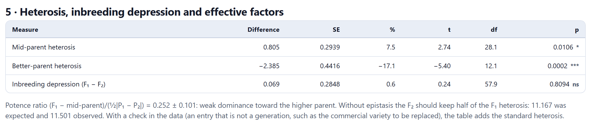
In the example, the heterosis over the mid-parent is 0.805 ± 0.294 (p = 0.011) and over the better parent, −2.385 ± 0.442 (p = 0.0002): the F1 is intermediate, closer to the tall parent. The potence ratio, (F1 − MP)/(½|P1 − P2|) = 0.252 ± 0.101, sums it up: 0 is intermediate inheritance, ±1 complete dominance toward one parent and more than 1, apparent overdominance. The inbreeding depression, F1 − F2 = 0.069, is not significant; without epistasis the F2 would keep half the heterosis (11.167), and 11.501 was observed, another sign of the epistasis found by the joint test.
In the F∞ metric, the heterosis over the mid-parent is F1 − MP = [h] + [l] − [i]. A positive additive × additive epistasis raises both parents and subtracts heterosis; a negative [l] (duplicate epistasis) does too. In the simulated example, with [h] = 6, [i] = 3 and [l] = −2, the expected heterosis is only 1: 1.49 ± 0.81 was observed, which is not significant even though there is clear dominance. When the chosen model includes [h], the note of the card gives this calculation with its estimates (5.68 − 4.00 = 1.68 in the simulated example).
Below the note, a figure draws each measure with its interval, as a difference or as a percentage. If you choose the lowest value in Objective, the better parent becomes the one with the lower value and the useful heterosis is the negative one.
For a breeding program, the practical question is not whether the F1 beats its parents, but whether it beats the variety or hybrid grown today. That is standard heterosis: F1 − check, as a percentage of the check mean. To compute it, you only need to plant the check in the same trial and put it in the data as one more entry that is not a generation: with its name in the entries column, or written in the generation column itself (Testigo, H-520), which Block 3 reads as a check. With several checks, the table adds one row for each.
The variances of both means come from the same plot model of Section 7.3, but fitted with the check, so the block effects and the plot error are those of the whole trial. The checks do not enter the scaling tests, the models or the heterosis over the parents, which remain the same as without them.
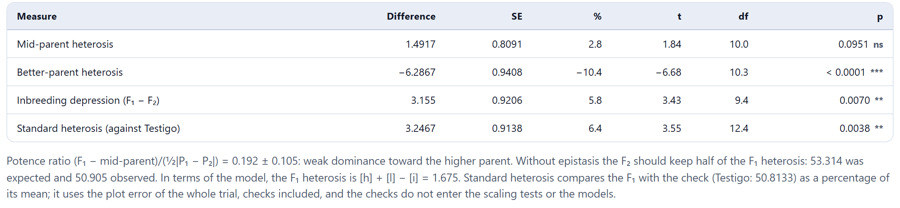
In the simulated example, the F1 (54.06) falls 6.29 below the tall parent and only 1.49 above the mean of its parents, without significance; against the check (50.81) it gains 3.25 with 12.4 degrees of freedom. The three readings do not contradict each other: they answer different questions. The heterosis over the parents speaks of gene action; the standard heterosis, of whether the F1 is worth it compared with what is already grown.
With the check of the simulated example, the difference, its standard error, the Satterthwaite degrees of freedom (12.404) and the p value agree to 10−8 with a reconstruction that fits the plot means by least squares. A mixed model fitted by restricted maximum likelihood, with random plots and one among-plant variance for each entry, gives 3.247 ± 0.919 against 3.247 ± 0.914.
How many genes separate the two parents? The Castle–Wright formula compares the difference between them with the segregation variance σ²S, the genetic variance that appears when they are crossed. If all the increasing alleles are in one parent and the genes have equal effects, nE = (P2 − P1)²/(8σ²S). Lande (1981) proposed four ways of estimating σ²S from different generations, each with its standard error.
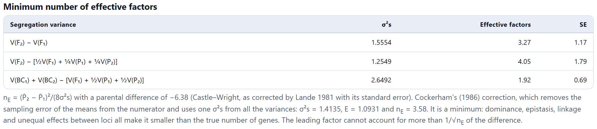
In the example, the three estimates range from 1.9 to 4.1 factors, and Cockerham’s (1986) correction, which removes from the numerator the sampling error of the parental means and combines all the variances into a single σ²S, gives 3.58. It is a minimum: dominance, epistasis, linkage and genes of unequal effect make it smaller than the real number. Even so, it says something useful: the gene of largest effect cannot explain more than 1/√nE of the difference between the parents, here about half.
With the tomato fruit-weight statistics used by Lande (1981, table 3), the block gives 9.78 ± 0.65, 10.03 ± 0.66, 9.12 ± 1.15 and 11.14 ± 0.77 factors; the paper publishes 9.8 ± 0.6, 10.0 ± 0.7, 9.1 ± 1.1 and 11.1 ± 0.8.
With data from several environments, the Environment menu lets you analyze one or all together. Together, the blocks of each environment count as different blocks and the interaction of the generations with the environments stays in the plot error; with plants without plots, each environment acts as a plot.
The 6 · Assumptions, formulas and references card summarizes the assumptions (homozygous parents, diploid inheritance, no maternal effects, no linkage between the interacting genes, an adequate scale) with the formulas and the references. If the scaling tests fail, before adding epistasis it is worth trying a transformation of the trait: the epistasis may be a scale effect. Results (.xlsx) downloads all the tables of the block, each on its own sheet, and every figure has its download panel.
Since Blocks 8 to 11 work with genotypes and not with generations, Continue takes you to Block 12, the report; ← Data returns to Block 3.